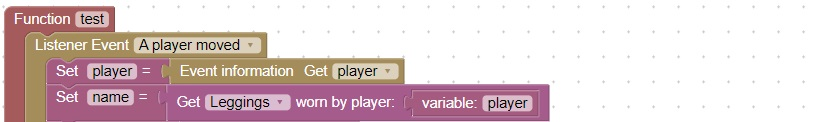
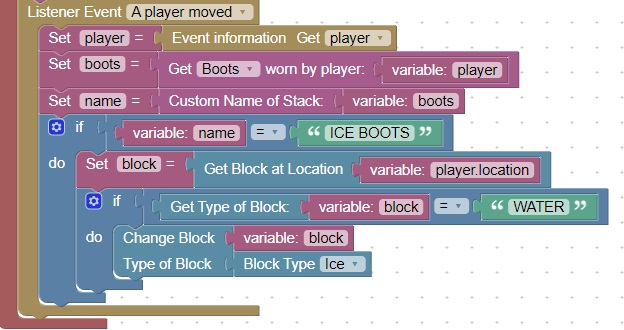

Manage Special Armor
Using armor to enhance your plugin
Helmet, Chestplate, Leggings, and Boots can be used to navigate obstacles and protect you from boss monsters
Each of these items can be checked when the player moves and enable special abilities,
Boots
This code can be used to check what the player is wearing. Get armor is found in Items => Gear

Handling special armor
This code will check if the player is in water and turn it into ice when wearing Ice Boots
